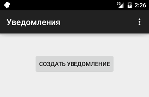
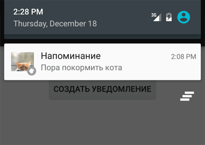
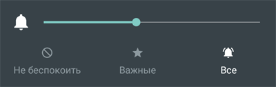
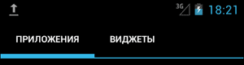
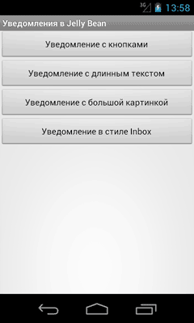
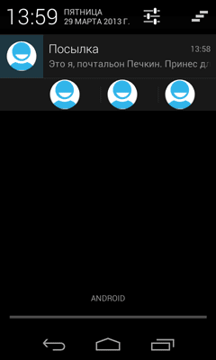
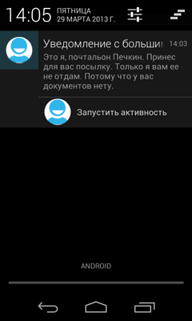
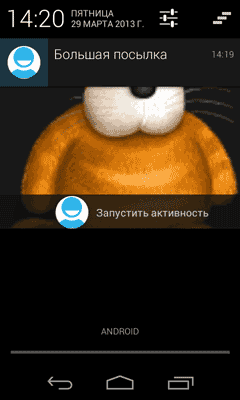
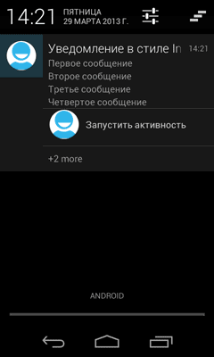

/* Моя кошка замечательно разбирается в программировании. Стоит мне объяснить проблему ей - и все становится ясно. */
John Robbins, Debugging Applications, Microsoft Press, 2000

/* Моя кошка замечательно разбирается в программировании. Стоит мне объяснить проблему ей - и все становится ясно. */
John Robbins, Debugging Applications, Microsoft Press, 2000
Вступление
Теория
Пример для Android 4
Удаление собственных уведомлений
Использование настроек по умолчанию
Запустить запущенную активность
Анимированный значок для уведомления
Новые возможности уведомлений в Jelly Bean
Приоритет
Кроме Toast-уведомлений, существует также другой тип уведомлений, который выводится в системной строке состояния в виде значка с небольшим текстом. Если открыть окно уведомлений, то можно увидеть расширенную текстовую информацию об уведомлении.
Когда пользователь открывает расширенное сообщение, Android запускает объект Intent, который определён в соответствии с уведомлением. Можно также конфигурировать уведомление с добавлением звука, вибрации и мигающих индикаторов на мобильном устройстве.
Этот вид уведомления удобен в том случае, когда приложение работает в фоновом режиме и должно уведомить пользователя о каком-либо важном событии. Уведомление будет висеть до тех пор, пока пользователь не отреагирует на него, в отличие от Toast-сообщения, которое исчезнет через несколько секунд. Фоновое приложение создаёт уведомление в строке состояния, но не запускает активность самостоятельно для получения пользовательского взаимодействия. Это должен сделать только сам пользователь в удобное ему время.
Чтобы создать уведомление в строке состояния, необходимо использовать два класса:
Обратите внимание, что в имени классов спрятан кот (Notification, NotificationManager), что намекает на целевое использование уведомлений. Уведомляйте пользователя только о самом важном, например, что пора кормить кота.
Для старых устройств были свои классы для уведомлений, которыми теперь не стоит пользоваться. Я удалил устаревший материал из этой статьи. Вместо этого используется класс NotificationCompat.Builder, который входит в пакет android.support.v4.app. Практически, вам нужно чуть-чуть изменить имя класса Notification.Builder и весь код будет работать на старых устройствах. В этой статье преимущественно будет использоваться класс для новых устройств, хотя в реальных проектах лучше пока использовать NotificationCompat.Builder, чтобы ваше приложение работало везде. Недавно появилась ещё одна причина использовать эту библиотеку - именно там есть методы, позволяющие выводить уведомления на часы под управлением Android Wear.
Начиная с Android 3, для уведомлений используется класс Notification.Builder. Добавим на экран активности кнопку и создадим простой пример для демонстрации работы уведомления.
package ru.alexanderklimov.testapplication;
import android.app.Notification;
import android.app.NotificationManager;
import android.app.PendingIntent;
import android.content.Context;
import android.content.Intent;
import android.content.res.Resources;
import android.graphics.BitmapFactory;
import android.support.v7.app.ActionBarActivity;
import android.os.Bundle;
import android.view.Menu;
import android.view.MenuItem;
import android.view.View;
public class MainActivity extends ActionBarActivity {
// Идентификатор уведомления
private static final int NOTIFY_ID = 101;
@Override
protected void onCreate(Bundle savedInstanceState) {
super.onCreate(savedInstanceState);
setContentView(R.layout.activity_main);
}
public void onClick(View view) {
Context context = getApplicationContext();
Intent notificationIntent = new Intent(context, MainActivity.class);
PendingIntent contentIntent = PendingIntent.getActivity(context,
0, notificationIntent,
PendingIntent.FLAG_CANCEL_CURRENT);
Resources res = context.getResources();
Notification.Builder builder = new Notification.Builder(context);
builder.setContentIntent(contentIntent)
.setSmallIcon(R.drawable.ic_launcher_cat)
// большая картинка
.setLargeIcon(BitmapFactory.decodeResource(res, R.drawable.hungrycat))
//.setTicker(res.getString(R.string.warning)) // текст в строке состояния
.setTicker("Последнее китайское предупреждение!")
.setWhen(System.currentTimeMillis())
.setAutoCancel(true)
//.setContentTitle(res.getString(R.string.notifytitle)) // Заголовок уведомления
.setContentTitle("Напоминание")
//.setContentText(res.getString(R.string.notifytext))
.setContentText("Пора покормить кота"); // Текст уведомления
// Notification notification = builder.getNotification(); // до API 16
Notification notification = builder.build();
NotificationManager notificationManager = (NotificationManager) context
.getSystemService(Context.NOTIFICATION_SERVICE);
notificationManager.notify(NOTIFY_ID, notification);
}
}
Для начала вам надо создать идентификатор уведомления. Он нужен, чтобы можно было различать уведомления друг от друга. Ведь вы можете создать идеальное приложение, которое уведомляло бы хозяина, что кота надо покормить (первое уведомление), погладить (второе уведомление), почистить лоток (третье уведомление). Если у вас будет один идентификатор, то каждое новое уведомление затрёт предыдущее и хозяин не увидит свои недоработки. Это не дело. Для идентификатора используйте какое-нибудь число. Только не надо оригинальничать, ничего не имею против числа 836, но вам определённо нужно сходить к психологу.
Далее формируется внешний вид и поведение уведомления через построитель Notification.Builder. Вы можете задать текст уведомлений, значки и прочие атрибуты:
Остальные методы поняты по названиям. Я закомментировал "правильные варианты" использования строк через ресурсы, но чтобы вам было понятно, в примерах сразу показаны нужные строки.
Также нам нужны объекты Intent и PendingIntent, которые описывают намерения и целевые действия. В нашем случае мы хотим запустить нашу активность, когда пользователь среагирует на уведомление.
Начиная с API 16, вместо устаревшего метода getNotification() следует использовать метод build(). Если посмотреть на исходники, то видно, что старый метод вызывает метод build(). Видимо, не понравилось имя метода, вот его и объявили устаревшим.
Далее надо сформировать уведомление с помощью специального менеджера. Ссылку на NotificationManager можно получить через вызов метода getSystemService(), передав ему в качестве параметра строковую константу NOTIFICATION_SERVICE, определённую в классе Context
Выводится уведомление с помощью метода notify() - своеобразный аналог метода show() у Toast из предыдущего урока.
На первой картинке мы видим, как появился маленький значок. Также появляется текст "Последнее китайское предупреждение!", который быстро исчезает.

Здесь я сделаю небольшое отступление. При проверке кода под Android 5.0 я увидел, что маленький значок из метода setSmallIcon() стал белым (смотри скриншот), а метод setTicker() не срабатывает. Насчёт значка понятно - в Android 5.0 используется дизайн Material, который требует использовать для значков в уведомлениях белый цвет на прозрачной подложке. Учитывайте это обстоятельство и заранее подготовьте такой ресурс. Про setTicker() я ничего не нашёл. А вообще в Android 5.0 уведомления сильно переработали и их можно выводить теперь даже на экран блокировки и на часы. Но это уже тема для другого разговора.
Далее мы можем открыть уведомление, чтобы увидеть более подробную информацию.

В примере показан избыточный код, чтобы вы сразу получили представление о возможностях уведомлений. Часть методов с префиксом set можно пропустить. Ниже показан укороченный код с использованием библиотеки совместимости для старых устройств. Обратите также внимание на упрощённый вариант доступа к менеджеру уведомлений через метод NotificationManagerCompat.from(this).
Notification.Builder builder = new NotificationCompat.Builder(this);
// оставим только самое необходимое
builder.setContentIntent(contentIntent)
.setSmallIcon(R.drawable.ic_launcher_cat)
.setContentTitle("Напоминание")
.setContentText("Пора покормить кота"); // Текст уведомления
Notification notification = builder.build();
NotificationManagerCompat notificationManager = NotificationManagerCompat.from(this);
notificationManager.notify(NOTIFY_ID, notification);
Как я уже упоминал, если вам нужно обновить уведомление, то просто ещё раз отправьте его устройству под этим же идентификатором.
Если коснуться уведомления, то запустится наша программа (даже если она была перед этим закрыта).
Совсем не обязательно запускать своё приложение, хотя это является распространённой практикой. Можете задать нужное поведение, например, запустить свой сайт по указанному адресу. Переделаем код:
Context context = getApplicationContext();
Intent notificationIntent = new Intent(Intent.ACTION_VIEW,
Uri.parse("http://developer.alexanderklimov.ru/android/"));
PendingIntent pendingIntent = PendingIntent.getActivity(context, 0,
notificationIntent, PendingIntent.FLAG_CANCEL_CURRENT);
Notification.Builder builder = new Notification.Builder(context)
.setContentTitle("Посетите мой сайт")
.setContentText("http://developer.alexanderklimov.ru/android/")
.setTicker("Внимание!").setWhen(System.currentTimeMillis())
.setContentIntent(pendingIntent)
.setDefaults(Notification.DEFAULT_SOUND).setAutoCancel(true)
.setSmallIcon(R.drawable.ic_launcher);
NotificationManager notificationManager = (NotificationManager) getSystemService(Context.NOTIFICATION_SERVICE);
notificationManager.notify(NOTIFY_ID, builder.build());
Обратите внимание, что на этот раз мы не указали картинку для большого значка и система подставляет в этом случае маленький значок, растягивая его до нужных размеров. Также появился новый метод setDefaults(), о котором говорится ниже.
Также можно вывести индикатор прогресса, чтобы указать текущий ход выполнения задачи. Можно установить бесконечное выполнение:
setProgress(100, 50, false);
Если ваша цель - только вывести уведомление, но не запускать активность при нажатии на самом уведомлении, то используйте вызов намерения без параметров:
Intent intent = new Intent();
Вы можете из программы удалить своё уведомление, посланное по глупости (не вздумайте удалять уведомления про кормёжку кота!).
notificationManager.cancel(NOTIFY_ID);
Можно добавить вибрацию, звуковой сигнал или мерцание светодиодами для ваших уведомлений при помощи настроек по умолчанию. В свойстве defaults вы можете сочетать следующие константы:
Чтобы к уведомлению добавить звук и вибрации по умолчанию, используйте код:
notification.defaults = Notification.DEFAULT_SOUND |
Notification.DEFAULT_VIBRATE;
Если хотите установить сразу все значения по умолчанию, задействуйте константу Notification.DEFAULT_ALL.
Использование звуковых оповещений для уведомления пользователя о событиях, связанных с устройством (например, входящий звонок), стало привычным. Большинство стандартных событий, от входящих звонков до новых сообщений и низкого заряда батареи, объявляются с помощью звуковых мелодий. Android позволяет проигрывать любой звуковой файл на телефоне в качестве уведомления. Чтобы это сделать, нужно присвоить свойству sound путь URI:
notification.sound = ringURI;
Также можно использовать собственный звуковой файл, загруженный на устройстве или добавленный в проект в качестве ресурса.
Uri ringURI =
RingtoneManager.getDefaultUri(RingtoneManager.TYPE_NOTIFICATION);
notification.sound = ringURI;
С SD-карты:
notification.sound = Uri.parse("file:///sdcard/cat.mp3"); // если знаем точный путь!
Вы можете использовать функцию виброзвонка в телефоне, чтобы сопровождать ваше уведомление вибрацией для привлечения внимания пользователя.
Чтобы использовать виброзвонок, передайте в свойство vibrate объекта Notification массив значений типа long. Постройте массив, учитывая, что значения, отвечающие за продолжительность вибрации (в миллисекундах), чередуются со значениями, которые означают длину паузы между вибрациями.
Прежде чем использовать виброзвонок в своем приложении, необходимо получить нужные полномочия, прописав их в манифесте:
<uses-permission android:name="android.permission.VIBRATE"/>
В следующем примере показано, как изменить уведомление, чтобы одна секунда вибрации сменялась одной секундой паузы на протяжении пяти секунд:
long[] vibrate = new long[] { 1000, 1000, 1000, 1000, 1000 };
notification.vibrate = vibrate;
Объект Notification включает в себя свойства для настройки цвета и частоты мерцания светодиодов устройства. Здесь стоит обратить внимание, что конкретные модели устройств могут не содержать светодиодные индикаторы или иметь другие цвета.
Свойство ledARGB может устанавливать цвет для светодиодной подсветки. Свойства ledOffMS и ledOnMS позволяют регулировать частоту и поведение светодиодов. Вы можете включить светодиоды, присвоив свойству ledOnMS значение 1, а ledOffMS – 0. Присвоив им обоим значения 0, светодиоды можно выключить.
Настроив работу со светодиодами, необходимо также добавить флаг FLAG_SHOW_LIGHTS к свойству flags объекта Notification.
В следующем фрагменте кода показано, как включить на устройстве красный светодиод:
notification.ledARGB = Color.RED;
notification.ledOffMS = 0;
notification.ledOnMS = 1;
notification.flags = notification.flags | Notification.FLAG_SHOW_LIGHTS;
Вы можете делать уведомления текущими и/или настойчивыми, устанавливая флаги FLAG_INSISTENT и FLAG_ONGOING_EVENT. Уведомления, помеченные как текущие, используются для представления событий, которые выполняются в данный момент времени (например, загрузка файла, фоновое проигрывание музыки). Текущие уведомления необходимы для сервисов, работающих на переднем плане. Пример установки флагов:
notification.flags = notification.flags | Notification.FLAG_ONGOING_EVENT;
В расширенной статусной строке текущие события отделены от обычных, чтобы вы сразу могли их отличить.
Настойчивые уведомления непрерывно повторяют звуковые сигналы, вибрируют и мерцают светодиодами, пока не будут остановлены. Подобные уведомления, как правило, используются для событий, которые требуют немедленного и своевременного внимания, таких как входящий звонок, срабатывание будильника или время кормёжки кота. В следующем фрагменте кода показано, как сделать уведомление настойчивым:
notification.flags = notification.flags | Notification.FLAG_INSISTENT;
В методе getActivity() может понадобиться изменить флаг, например.
PendingIntent pendingIntent = PendingIntent.getActivity(
context,
0, intent, Intent.FLAG_ACTIVITY_NEW_TASK);
Существуют и другие флаги. Хотя в большинстве случаев используется просто 0.
В Android 5.0 пользователь может установить собственный уровень оповещений, нажав на кнопки увеличения громкости на домашнем экране. Появится диалоговое окно, в котором задаётся один из трёх доступных уровней.

Не сразу бывает заметно, но на самом деле, когда при нажатии на уведомлении у вас запускается активность, то запускается не старая активность, которая была на экране до этого, а новая. Это можно увидеть в примере, если, например, есть текстовое поле с текстом. Введите какой-нибудь текст в активности, а потом создайте уведомление, вызывающее активность. Вы увидите, что запустится новая активность с пустыми текстовым полем, хотя мы ожидали увидеть запущенную активность. Если вам нужен именно этот вариант, то используйте флаги для намерения.
Intent intent = new Intent(context, MainActivity.class);
intent.setFlags(Intent.FLAG_ACTIVITY_CLEAR_TOP
| Intent.FLAG_ACTIVITY_SINGLE_TOP);
Либо вы можете прописать в манифесте для нужной активности атрибут android:launchMode="singleTop".
Сначала покажу один фокус. Возьмём код из старого примера и заменим одну строчку, которая отвечает за вывод маленького значка - .setSmallIcon(android.R.drawable.stat_sys_upload):
public void onClick(View view) {
Context context = getApplicationContext();
Intent notificationIntent = new Intent(context, TestActivity.class);
PendingIntent contentIntent = PendingIntent.getActivity(context,
0, notificationIntent,
PendingIntent.FLAG_CANCEL_CURRENT);
NotificationManager nm = (NotificationManager) context
.getSystemService(Context.NOTIFICATION_SERVICE);
Resources res = context.getResources();
Notification.Builder builder = new Notification.Builder(context);
builder.setContentIntent(contentIntent)
.setSmallIcon(android.R.drawable.stat_sys_upload)
.setLargeIcon(BitmapFactory.decodeResource(res, R.drawable.cat))
.setTicker("Последнее китайское предупреждение!")
.setWhen(System.currentTimeMillis())
.setAutoCancel(true)
.setContentTitle("Напоминание")
.setContentText("Пора покормить кота"); // Текст уведомления
Notification n = builder.getNotification();
nm.notify(NOTIFY_ID, n);
}
Запускаем код и создаём уведомление. Вы увидите, что в строке состояния выводится анимированный значок стрелки. Такой способ стоит использовать для действительно важных сообщений, чтобы понапрасну не раздражать пользователя.

С анимированным значком связана интересная особенность. Если вы опустите метод setTicker(), то значок уже не будет анимированным. Будьте начеку.
Вы можете попробовать поискать другие системные анимации, например, android.R.drawable.stat_sys_download или создать собственную анимацию.
<?xml version="1.0" encoding="UTF-8"?>
<animation-list android:oneshot="false"
xmlns:android="http://schemas.android.com/apk/res/android">
<item android:duration="200" android:drawable="@drawable/stat_sys_wifi_signal_1_anim0" />
<item android:duration="200" android:drawable="@drawable/stat_sys_wifi_signal_1_anim1" />
<item android:duration="200" android:drawable="@drawable/stat_sys_wifi_signal_1_anim2" />
<item android:duration="200" android:drawable="@drawable/stat_sys_wifi_signal_1_anim3" />
<item android:duration="200" android:drawable="@drawable/stat_sys_wifi_signal_1_anim4" />
<item android:duration="200" android:drawable="@drawable/stat_sys_wifi_signal_1_anim5" />
</animation-list>
На странице http://forum.xda-developers.com/showthread.php?t=1088677 энтузиасты выложили несколько готовых примеров анимации, которые можно скачать.
В Android 4.1-4.2 появились дополнительные возможности для уведомлений. Сейчас мы их и рассмотрим.
Подготовим разметку из четырёх кнопок:
<LinearLayout xmlns:android="http://schemas.android.com/apk/res/android"
xmlns:tools="http://schemas.android.com/tools"
android:layout_width="match_parent"
android:layout_height="match_parent"
android:orientation="vertical" >
<Button
android:id="@+id/btBasicNotification"
android:layout_width="fill_parent"
android:layout_height="wrap_content"
android:onClick="sendActionNotification"
android:text="Уведомление с кнопками" />
<Button
android:id="@+id/btBigTextNotification"
android:layout_width="fill_parent"
android:layout_height="wrap_content"
android:onClick="sendBigTextStyleNotification"
android:text="Уведомление с длинным текстом" />
<Button
android:id="@+id/btBigPictureNotification"
android:layout_width="fill_parent"
android:layout_height="wrap_content"
android:onClick="sendBigPictureStyleNotification"
android:text="Уведомление с большой картинкой" />
<Button
android:id="@+id/btInboxStyleNotification"
android:layout_width="fill_parent"
android:layout_height="wrap_content"
android:onClick="sendInboxStyleNotification"
android:text="Уведомление в стиле Inbox" />
</LinearLayout>
Перейдём к коду. У каждой кнопки мы прописали свой обработчик касания. Поэтому будет удобно разбить код по методам. Обратите внимание, как теперь следует получить доступ к объекту NotificationManager - метод getNotification() в новых версиях считается устаревшим.

Начнём с первого варианта. Теперь в уведомлениях можно размещать до трёх кнопок. Это может быть удобным, если приложение состоит из нескольких активностей или нужно предложить три разных варианта развития сценария. За появление кнопок в уведомлении отвечает метод setAction().
public void sendActionNotification(View view) {
NotificationManager notificationManager = (NotificationManager) getSystemService(NOTIFICATION_SERVICE);
// Намерение для запуска второй активности
Intent intent = new Intent(this, SecondActivity.class);
PendingIntent pIntent = PendingIntent.getActivity(this, 0, intent, 0);
// Строим уведомление
Notification builder = new Notification.Builder(this)
.setTicker("Пришла посылка!")
.setContentTitle("Посылка")
.setContentText(
"Это я, почтальон Печкин. Принес для вас посылку")
.setSmallIcon(R.drawable.ic_launcher).setContentIntent(pIntent)
.addAction(R.drawable.ic_launcher, "Открыть", pIntent)
.addAction(R.drawable.ic_launcher, "Отказаться", pIntent)
.addAction(R.drawable.ic_launcher, "Другой вариант", pIntent)
.build();
// убираем уведомление, когда его выбрали
builder.flags |= Notification.FLAG_AUTO_CANCEL;
notificationManager.notify(0, builder);
}

Обратите внимание, что у кнопок нет текста, в методе setAction() второй параметр служит для удобства разработчика, но пользователь не увидит текст, поэтому вам следует придумать "говорящие" значки, по которым будет понятен смысл нажатия. В нашем примере при нажатии на любой из трёх кнопок запустится вторая активность.
Если вы внимательно смотрели на уведомление, то могли увидеть, что длинный текст, помещённый в метод setContentText(), вывелся на экран не полностью. Если информация слишком важная и вам хочется её показать в уведомлении полностью, то вам подойдёт следующий вариант:
public void sendBigTextStyleNotification(View view) {
String bigText = "Это я, почтальон Печкин. Принес для вас посылку. "
+ "Только я вам ее не отдам. Потому что у вас документов нету. ";
Intent intent = new Intent(this, SecondActivity.class);
PendingIntent pIntent = PendingIntent.getActivity(this, 0, intent, 0);
Notification.Builder builder = new Notification.Builder(this)
.setTicker("Пришла посылка!")
.setContentTitle("Уведомление с большим текстом")
.setContentText(
"Это я, почтальон Печкин. Принес для вас посылку")
.setSmallIcon(R.drawable.ic_launcher)
.addAction(R.drawable.ic_launcher, "Запустить активность",
pIntent).setAutoCancel(true);
Notification notification = new Notification.BigTextStyle(builder)
.bigText(bigText).build();
NotificationManager notificationManager = (NotificationManager) getSystemService(NOTIFICATION_SERVICE);
notificationManager.notify(1, notification);
}
Здесь следует обратить внимание на следующий момент. В первом примере переменная builder была объектом типа Notification. Во втором примере мы разбили построение уведомления на две части. Настройка самого уведомления происходит в объекте типа Notification.Builder (сам код остался без изменений), а стиль уведомления задаётся уже для объекта типа Notification. В данном случае мы используем стиль BigTextStyle().bigText(). В этом случае текст в setContentText() игнорируется, а вместо него используется отдельно заданный нами текст в строковой переменной bigText.

Пример с большой картинкой аналогичен с предыдущим примером. Только мы задаём уже другой стиль для уведомления. Вместо стиля длинного текста используется стиль BigPictureStyle().bigPicture():
public void sendBigPictureStyleNotification(View view) {
Intent intent = new Intent(this, SecondActivity.class);
PendingIntent pIntent = PendingIntent.getActivity(this, 0, intent, 0);
Builder builder = new Notification.Builder(this);
builder.setContentTitle("Большая посылка")
.setTicker("Пришла посылка!")
.setContentText("Уведомление с большой картинкой")
.setSmallIcon(R.drawable.ic_launcher)
.addAction(R.drawable.ic_launcher, "Запустить активность",
pIntent);
// Подготовим большую картинку
Notification notification = new Notification.BigPictureStyle(builder)
.bigPicture(
BitmapFactory.decodeResource(getResources(),
R.drawable.cat)).build();
notification.flags |= Notification.FLAG_AUTO_CANCEL;
NotificationManager notificationManager = (NotificationManager) getSystemService(NOTIFICATION_SERVICE);
notificationManager.notify(2, notification);
}

Есть ещё один стиль InboxStyle, напоминающий стиль писем в папке Входящие.
public void sendInboxStyleNotification(View view) {
Intent intent = new Intent(this, SecondActivity.class);
PendingIntent pIntent = PendingIntent.getActivity(this, 0, intent, 0);
Builder builder = new Notification.Builder(this)
.setTicker("Пришла посылка!")
.setContentTitle("Уведомление в стиле Inbox")
.setContentText("Inbox Style notification!!")
.setSmallIcon(R.drawable.ic_launcher)
.addAction(R.drawable.ic_launcher, "Запустить активность", pIntent);
Notification notification = new Notification.InboxStyle(builder)
.addLine("Первое сообщение").addLine("Второе сообщение")
.addLine("Третье сообщение").addLine("Четвертое сообщение")
.setSummaryText("+2 more").build();
notification.flags |= Notification.FLAG_AUTO_CANCEL;
NotificationManager notificationManager = (NotificationManager) getSystemService(NOTIFICATION_SERVICE);
notificationManager.notify(3, notification);
}

Подводя итоги, следует отметить, у уведомлений очень много методов, которые можно использовать в своём приложении. Вот как может выглядеть полный набор:
new Notification.Builder(this.getApplicationContext())
.setAutoCancel(boolean autoCancel)
.setContent(RemoteViews views)
.setContentInfo(CharSequence info)
.setContentIntent(PendingIntent intent)
.setContentText(CharSequence text)
.setContentTitle(CharSequence title)
.setDefaults(int defaults)
.setDeleteIntent(PendingIntent intent))
.setFullScreenIntent(PendingIntent intent, boolean highPriority)
.setLargeIcon(Bitmap icon)
.setLights(int argb, int onMs, int offMs)
.setNumber(int number)
.setOngoing(boolean ongoing)
.setOnlyAlertOnce(boolean onlyAlertOnce)
.setPriority(int pri)
.setProgress(int max, int progress, boolean indeterminate)
.setShowWhen(boolean show)
.setSmallIcon(int icon, int level)
.setSmallIcon(int icon)
.setSound(Uri sound)
.setSound(Uri sound, int streamType)
.setStyle(Notification.Style style)
.setSubText(CharSequence text)
.setTicker(CharSequence tickerText, RemoteViews views)
.setTicker(CharSequence tickerText)
.setUsesChronometer(boolean b)
.setVibrate(long[] pattern)
.setWhen(long when)
.addAction(int icon, CharSequence title, PendingIntent intent)
.build()
Не все уведомления одинаковы важны. Например, напоминание о том, что пора кормить кота - это сверхважное сообщение (не обсуждается). Угроза землетрясения, цунами, урагана - тоже очень важные сообщения. Новые версии программы, новое письмо и т.д. - не слишком важные уведомления, которые можно почитать после того, как покормили кота.
В API 16 появился новый метод setPriority() с константами по мере увеличения: Notification.PRIORITY_MIN, Notification.PRIORITY_LOW, Notification.PRIORITY_DEFAULT, Notification.PRIORITY_HIGH, Notification.PRIORITY_MAX.
public void OnClick(View v) {
final int NOTIFICATION_ID = 1;
PendingIntent activityPendingIntent = getActivityPendingIntent();
Notification notification = new NotificationCompat.Builder(this)
.setContentTitle("Срочно!")
.setContentText("Накорми кота!")
.setSmallIcon(R.mipmap.ic_launcher)
.setContentIntent(activityPendingIntent)
.setPriority(Notification.PRIORITY_HIGH)
.setDefaults(Notification.DEFAULT_ALL)
.setCategory(Notification.CATEGORY_STATUS)
.build();
NotificationManagerCompat notificationManager = NotificationManagerCompat.from(this);
notificationManager.notify(NOTIFICATION_ID, notification);
}
private PendingIntent getActivityPendingIntent() {
Intent activityIntent = new Intent(this, MainActivity.class);
activityIntent.addFlags(Intent.FLAG_ACTIVITY_SINGLE_TOP);
return PendingIntent.getActivity(this, 0, activityIntent, PendingIntent.FLAG_UPDATE_CURRENT);
}
Чем выше приоритет уведомления, тем выше он находится среди остальных уведомлений. Таким образом, важные сообщения всегда будут наверху, даже если поступили позже других менее важных сообщений. Не злоупотребляйте этой возможностью и трезво оцените важность вашего уведомления.
Напоследок дам совет - читайте документацию. Google постоянно вносит какие-то изменения и добавления. Практически в каждой новой версии Android что-то менялось. Я не в состоянии отслеживать новинки и оперативно добавлять в статью.
Вот совсем свежий пример изменений, которые произошли в API 23:
Удалили метод setLatestEventInfo()
Добавили новые методы getLargeIcon() и getSmallIcon().
Добавили новое поле класса CATEGORY_REMINDER и объявили устаревшими поля icon и largeIcon.